Where priors come from
Rob Zinkov
2015-06-09
When reading up on Bayesian modeling papers it can be bewildering to understand why a paricular prior was chosen. The distributions usually are named after people and the density equations are pretty scary. This makes it harder to see why the models were successful.
The reality is that many of these distributions are making assumptions about the type of data we have. Although there are hundreds of probability distributions, its only a dozen or so that are used again and again. The others are often special cases of these dozen or can be created through a clever combination of two or three of these simpler distributions.
I’d like to outline this small group of distributions and say what assumptions they encode, where our data came from, and why they get used. Often a prior is employed because the assumptions of the prior match what we know about the parameter generation process.
Keep in mind, there are multiple effective priors for a particular problem. The best prior to use for a problem is not some wisdom set in stone. A particular prior is chosen as some combination of analytic tractability, computationally efficiency, and does it make other recognizable distributions when combined with popular likelihood functions. Better priors are always being discovered by researchers.
Distributions are understandable in many different ways. The most intuitive for me is to plot a histogram of values. Here is some helper code for doing that.
import numpy as np
import numpy.random as r
import matplotlib.pyplot as plt
def config():
plt.style.use('ggplot')
def display_histogram(dist, samples=10000, **kwargs):
plt.hist(dist(samples), **kwargs)Uniform distribution
The uniform distribution is the simplest distribution to explain. Whether you use this one in its continuous case or its discrete case it is used for the same thing. You have a set of events that are equally likely. Note, the uniform distribution from \(\infty\) to \(-\infty\) is not a probability distribution. This requires you give lower and upper bounds for your values.
def uniform(lo, hi):
return lambda samples: r.uniform(lo, hi, samples)
display_histogram(uniform(1, 3))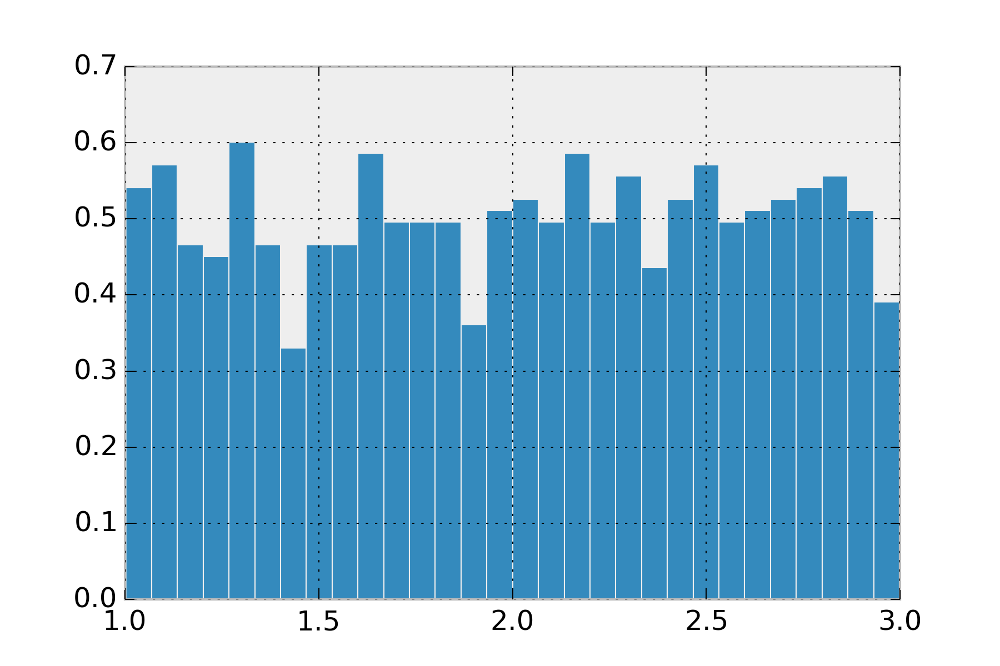
This distribution isn’t used as often as you’d think, since its rare we want hard boundaries on our values.
Normal distribution
The normal distribution is possibly the most frequently used distribution. Sometimes called the Gaussian distribution. This has support over the entire real line. It makes it really convenient, because you don’t have to worry about checking boundaries. This is the distribution you want if you find yourself saying things like, “the sensor sayss 20 km/h +/- 5 km/h”. The normal distribution takes as arguments a center (\(\mu\)) and spread or standard deviation (\(\sigma\)). The value \(\sigma^2\) comes up a lot is sometimes called the variance. Standard deviation states that 67% of your data is within one standard deviation of the center, and 95% is within two standard deviation. As an example, if I say my data comes from normal(0, 3) I mean that 95% of my data should be between -6 and 6.
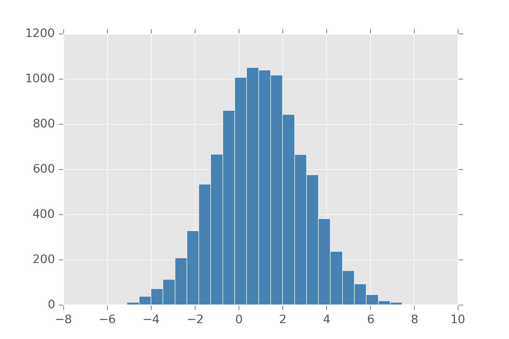
It will always have a single maximum value, so if the distribution you had in mind for your problem has multiple solutions, don’t use it. The normal also comes up a lot because if you have multiple signals that come from any distribution, with enough signals their average converges to the normal distribution. This is one version of what is called, Central Limit Theorem.
def clt(samples):
return np.array([np.mean(r.uniform(1, 2, 100))
for i in range(samples)])
display_histogram(clt)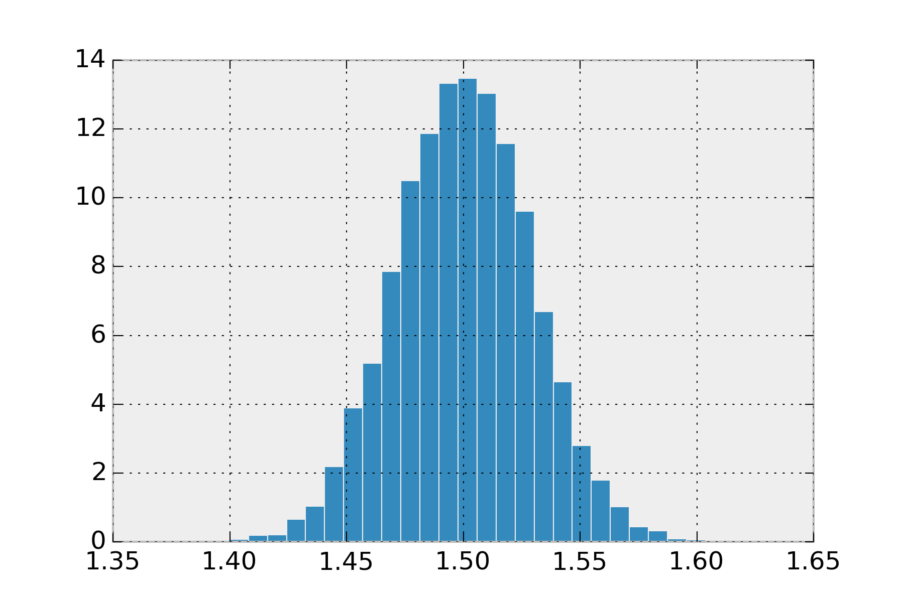
Feel free to change that uniform and its arguments to any other distribution and you’ll see its always a normal.
Bernoulli distribution
The bernoulli distribution is usually the first distribution people are taught in class. This is the distribution is for deciding two choices. It takes an argument \(\rho\) which dictates how biased are we to select 0 and 1. These numbers are also considered stand-ins for success (1) and failure (0) and usually talked about in these terms. Bernoulli can be written in terms of uniform.
def bern(p):
def samples(s):
u = r.uniform(0, 1, s)
return np.where(u < p, 1, 0)
return samples
display_histogram(bern(0.7))In that example, we made \(\rho\) 0.7 and obtain this histogram:
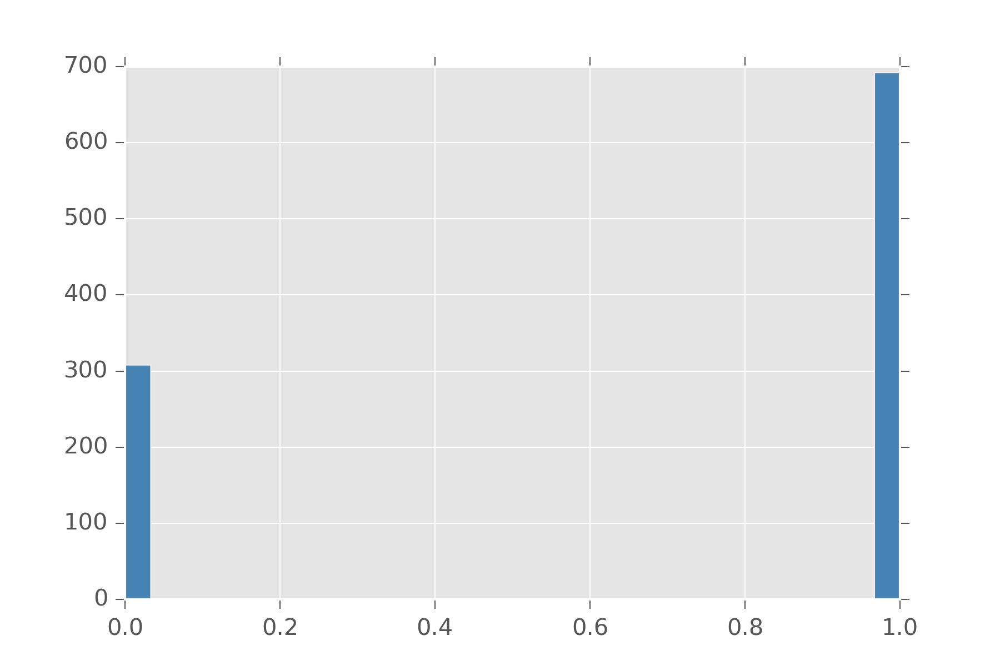
Bernoulli is also handy since you can define a bunch of distributions in terms of them. The Binomial distribution is a distribution on natural numbers from \(0\) to \(n\) inclusive. It takes a bias \(\rho\) and counts how often a coin flip succeeds in n trials.
def binomial(n, p):
def samples(s):
k = [np.sum(bern(p)(n)) for s in range(s)]
return np.array(k)
return samples
display_histogram(binomial(20, 0.7))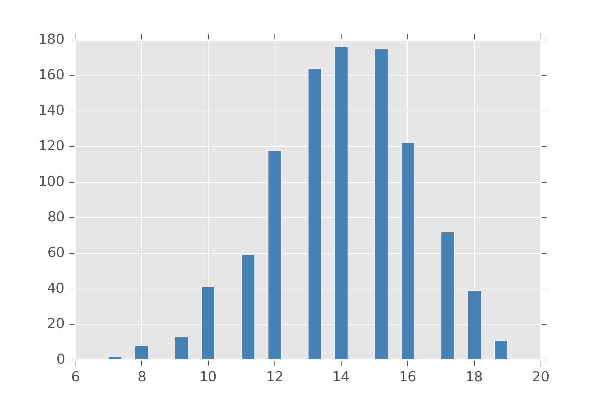
Another distribution which can be encoded with bernoulli is the Negative Binomial distribution. This distribution counts how often the coin flip will succeed if you are allowed to fail up to \(r\) times.
Categorical distribution
Categorical is the distribution when you have a variable that can take on a discrete set of values. Its arguments are the probability you believe for each value of appearing. This can be simulated by indexing these values with natural numbers.
def categorical(ps):
def samples(s):
return r.choice(range(len(ps)), s, p=ps)
return samples
>> categorical([0.2, 0.5, 0.3])(10)
array([2, 0, 1, 0, 1, 1, 1, 1, 1, 2])One thing to note, lots of folks like doing a One-Hot encoding so we represent which sample as a binary vector where our choice is one and all the other elements of the vector are zero.
def onehot(n, k):
return np.eye(1, n, k=k)[0]
def categorical2(ps):
def samples(s):
l = len(ps)
return np.array([onehot(l,
r.choice(range(l), p=ps))
for i in range(s)])
return samples
>> categorical2([0.2, 0.5, 0.3])(5)
array([[ 0., 1., 0.],
[ 0., 1., 0.],
[ 0., 1., 0.],
[ 0., 1., 0.],
[ 0., 0., 1.]])Gamma distribution
The gamma distribution comes up all over the place. The intuition for the gamma is it is the prior on positive real numbers. Now there are many ways to get a distribution over positive numbers. We can take the absolute-value of a normal distribution and get what’s called a Half-Normal distribution. If we have a variable \(x\) from the normal distribution, we can also do \(exp(x)\) and \(x^2\) to get distributions over positive numbers. These are the Lognormal and \(\chi^2\) distributions.
So why use the gamma distribution? Well when you use the other distributions, you are really saying you believe your variable has some latent property that spans the real-line and something made it one-sided. So if you use a lognormal, you are implicitly saying you believe that the log of this variable is symmetric. The assumption of \(\chi^2\) is that your variable is the sum of k squared factors, where each factor came from the normal(0, 1) distribution.
If you don’t believe this, why say it?
Some people suggest using gamma because it is conjugate with lots of distributions. This means that when gamma is a used as prior to something like normal, the posterior of this distribution also is a gamma. I would hesitate to use a prior just because it makes performing a computation easier. It’s better to have your priors actually encode what you believe. You can always go back later and make something conjugate once you need something more efficient.
The gamma distribution is the main way we encode something to be a postive number. It’s parameters shape \(k\) and scale \(\theta\) roughly let you tune gamma like the normal distribution. \(k \theta\) specifies the mean value we expect, and \(k \theta^2\) specifies the variance. This is a common theme in most distributions. We want two parameters so we can set the mean and variance. Distributions that don’t have this feature are usually generalized until they do.
As an example, here is what gamma(5, 1) looks like. Note where it peaks and how it spreads out. Change the parameters and see how it changes
def gamma(shape, scale):
return lambda s: r.gamma(shape, scale, s)
display_histogram(gamma(5, 1), 10000)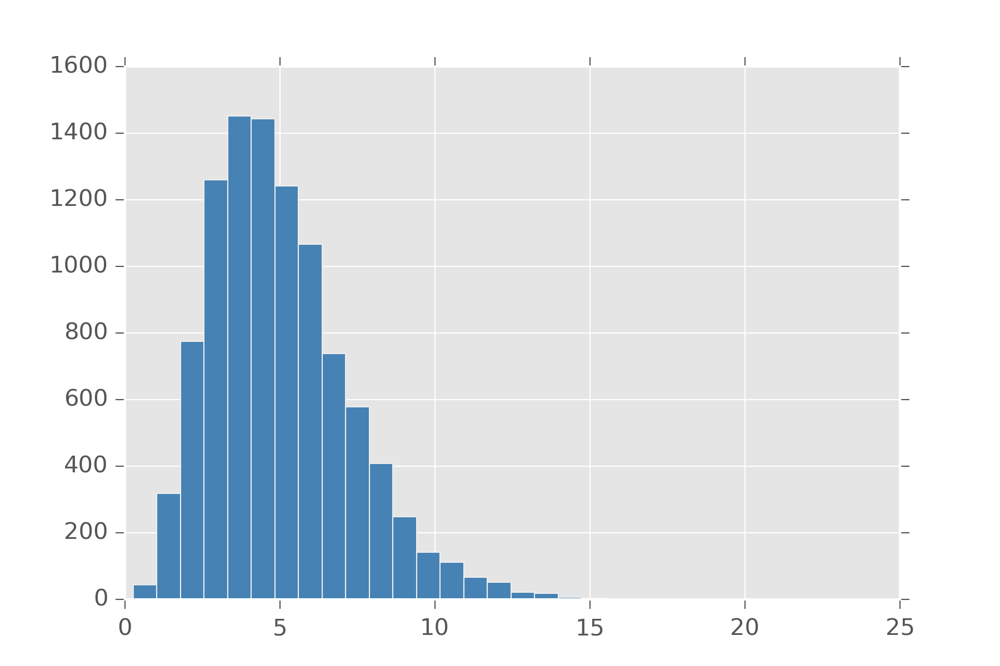
Also distributions like \(\chi^2\) (chi-squared) can be defined in terms of gamma. Actually many distributions can be built from gamma. Taking the reciprocal of a variable from the gamma gives you a value from the Inv-gamma distribution. If we normalize this positive number to be between 0 and 1, we get the Beta distribution.
def beta(a, b):
def samples(s):
x = r.gamma(a, 1, s)
y = r.gamma(b, 1, s)
return x/(x + y)
return samples
display_histogram(beta(10, 2), 10000)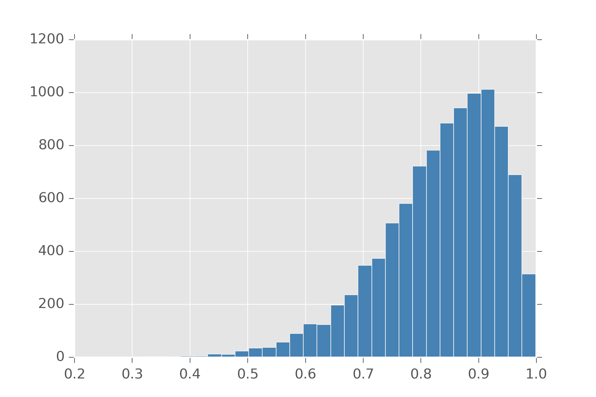
If we want to a prior on say categorical, which takes as an argument a list of numbers that sum to 1, we can use a gamma to generate k-numbers and then normalize. This is precisely the definition of the Dirichlet distribution.
Poisson Distribution
The poisson distribution is seen as the distribution over event arrival times. It takes an average arrival rate \(\lambda\) and returns the number of events you can expect. In this sense, it’s a distribution over natural numbers. It can be thought of as a discrete analog to the gamma distribution.
Unfortunely, poisson in this form is a bit cumbersome to use. For one with poisson, mean and variance are both \(\lambda\). You can’t tune this distribution to have them be different. To do that, we note that \(\lambda\) has to be a positive real number and put a gamma prior on it.
def overdispersed_poisson(shape,scale):
def samples(s):
lam = r.gamma(shape, scale, s)
return r.poisson(lam)
return samples
display_histogram(overdispersed(3, 1), 10000)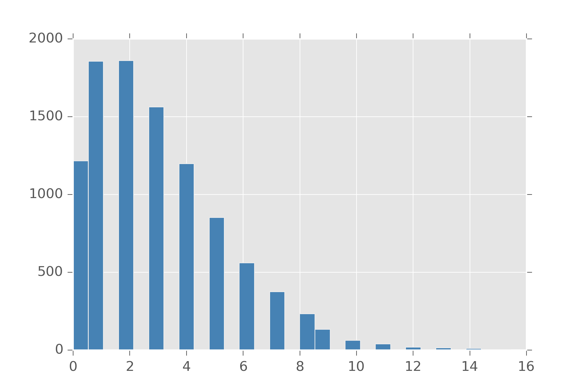
This is distribution is sometimes called the Overdispersed Poisson, but its also a reparameterized Negative Binomial! Different concept same math equation.
A related distribution to poisson is the exponential distribution. This distribution measures the time we can expect to elapse between events. If we can tune the rate events happen to change with time, we get distributions that are good at modeling how long until an object fails. One example of such a distribution is the Weibull distribution. It has a few forms, but the easiest is one that has \(\lambda\) for the rate at which events in this case usually failure, and an extra argument \(k\) which models if the rate of failure should increase as time goes on. A value of \(k=1\) is just the exponential distribution. A value lower than 1 means failure gets less likely over time and a value over 1 means a failure gets more likely over time.
def weibull(lam, k):
def samples(s):
return lam*r.weibull(k, s)
return samples
display_histogram(weibull(1.0, 1.5), 10000)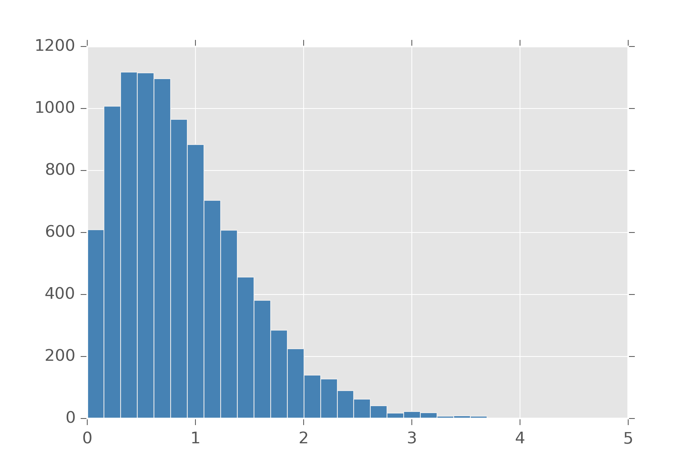
For the more morbid, you can ask if human mortality is measured with a weibull distribution. Actually, its the Gompertz distribution that is used. It turns out to be the distribution you get when you call exp on samples from the weibull.
Heavy-tailed distributions
Often distributions are too optimistic about how close a value stays near the mean. The following are all distributions which are said to have heavy-tails. The major advantage of using a heavy-tail distribution is it’s more robust towards outliers.
Cauchy is a nasty distribution. It has no well-defined mean or variance or any moments. Typically, this is used by people who are or were at one time physicists. You can make a cauchy by taking two samples from a normal distribution and dividing them. I hesitate to recommend it since its hard to work with and there are other heavy-tailed distributions that aren’t so intractable.
Student-T or \(t\) can be interpretted as the distribution over a subsampled population from the normal distribution. What’s going on here is that because our sample size is so small, atypical values can occur more often than they do in the general population. As your subpopulation grows, the membership looks more like the underlying population from the normal distribution and the t-distribution becomes the normal distribution. The parameter \(\nu\) lets you state how large you believe this subpopulation to be. The t-distribution can also be generalized to not be centered at 0.
Laplace distribution arises as an interesting modification to the normal distribution. Let’s look at the density function for normal
\[ \frac{1}{\sigma\sqrt{2\pi}}\, exp\left({-\frac{(x - \mu)^2}{2 \sigma^2}}\right)\]
That function inside \(exp(\dots)\) can be seen as an L2 norm on our variable. If we replace it with an L1 norm and change the denominator so it all still sums to one we get the laplace. In this way, a laplace centered on 0 can be used to put a strong sparsity prior on a variable while leaving a heavy-tail for it if the value has strong support for another value. There are a whole family of distribution available by putting in different norms.
def laplace(loc, scale):
def samples(s):
return r.laplace(loc, scale, s)
return samples
display_histogram(laplace(0,2), 10000, bins=50)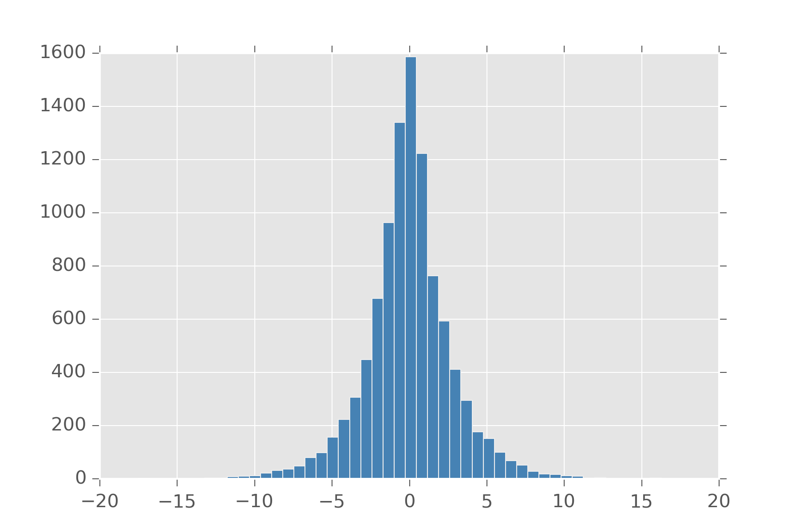
Multivariate Normal
When working with multivariate distributions, most can be seen as generalizations of univariate distributions. All those assumptions, from those still hold. We already mentioned Dirichlet and Categorical as multivariate distributions. The big thing you get with a multivariate generalization is the ability to encode how you strongly you believe a collection of variables is correlated with each other.
The Multivariate Normal generalizes the normal distribution to multiple variables. Now \(\mu\) refers to the center of each of them. But \(\sigma\), our standard deviation isn’t just the standard deviation in each variable. Instead we get a covariance matrix that let’s us dictate how correlated each variable is with every other variable. To visualize this we need some helper code.
def display_histogram2d(dist, samples=1000, **kwargs):
x, y = dist(samples)
plt.hist2d(x, y,
bins=100,
normed=False,
cmap="BuPu",
**kwargs)
def multinorm(mean, cov):
def samples(s):
return r.multivariate_normal(mean, cov, s).T
return samplesSo let’s see what happens when we say, the first and second variables are 0.5 correlated.
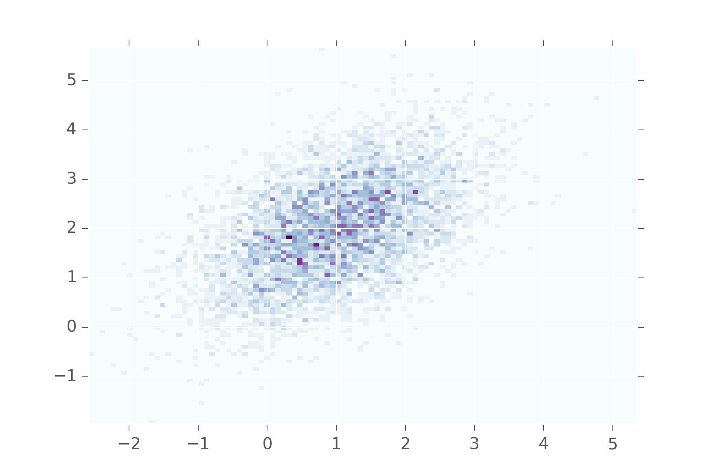
This shows that values in the first variable will be near values in the second. You don’t see them diverging too often from each other. Keep adjusting the matrix to see what it looks when other values are used.
Wishart and LKJ
The wishart distribution is the prior on symmetric matrices. It takes as arguments a multivariate normal distribution and a variable \(\nu\) which called the degrees of freedom. I think its best to think of \(\nu\) in terms of matrix factorization. The wishart is made by first making a \(\nu \times p\) matrix \(X\) by concat \(\nu\) draws from the multivariate normal and then squaring it. The degrees of freedom let you set the what you think is the matrix’s true dimensionality.
def wishart(v, n):
va = np.asarray(v)
def one_sample():
X = np.matrix(multinorm(np.zeros(va.shape[0]), va)(n).T)
return X.T*X
def samples(s):
return np.array([one_sample() for i in range(s)])
return samples
m = wishart(np.eye(30), 10)(1)[0]
plt.matshow(m, cmap="BuPu")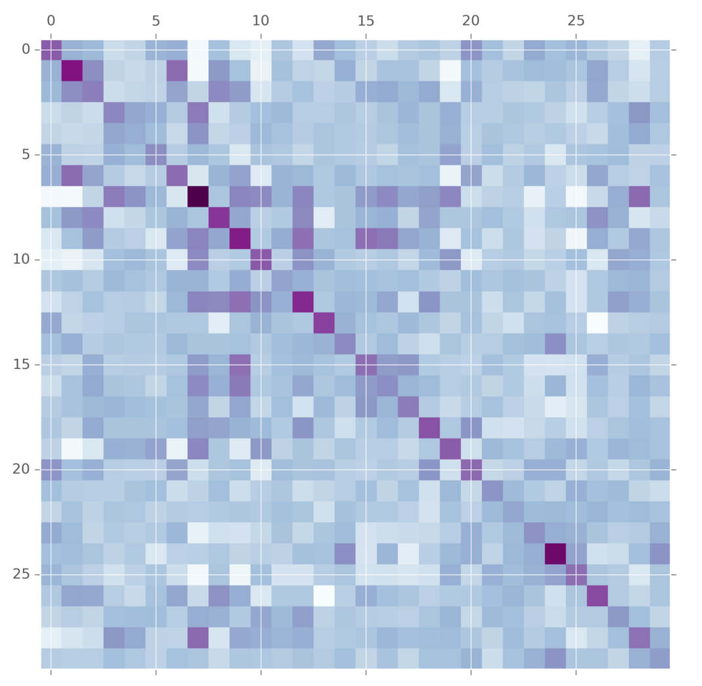
This is commonly used as a prior on convariance matrices for multivariate normal distributions. But wait! What does this anything in its generative story have to do with covariance matrices? Lots of people have thought this. A more modern alternative is the LKJ distribution. It also takes a covariance matrix and tuning parameter. The difference is here is that the LKJ tuning parameter \(\eta\) controls how independent are the variables. When it is set to 1, it is uniform over the entire matrix. As you set \(\eta\) to larger and larger values, more and more weight is concentrated on the diagnol, meaning we believe that the variables are mostly independent. This prior is easier for some people to tune.
The method for generating samples from this distribution is a little bit tedious. See this fantastic writeup if you are interested in the details. It’s arguably better and more understandable than the original paper.
def vine(eta, d):
def one_sample():
b = eta + (d - 1)/2
P = np.zeros((d, d))
S = np.eye(d)
for k in range(d-1):
b = b - 0.5
for i in range(k+1, d):
P[k, i] = 2*r.beta(b, b) - 1
p = P[k, i]
for l in range(k-1, 0, -1):
p = p * np.sqrt((1-P[l, i]**2) *
(1-P[1, k]**2)) + P[l, i]*P[l, k]
S[k, i] = p
S[i, k] = p
return S
def samples(s):
return np.array([one_sample() for i in range(s)])
return samples
m = vine(2.0, 30)(1)[0]
plt.matshow(m, cmap="BuPu")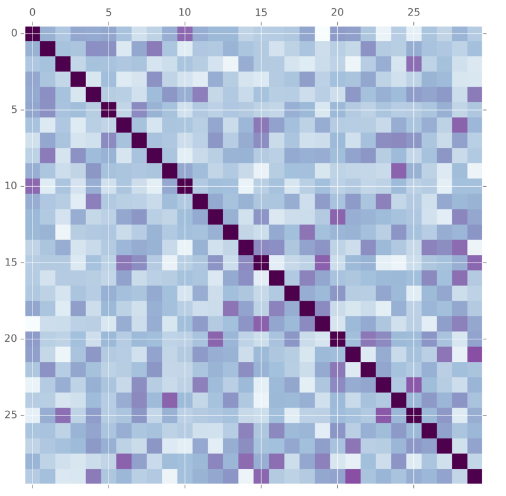
Multinomial
Categorical in the One-Hot encoding can also be seen as a special-case of the Multinomial distribution. The multinomial is related to the categorical like bernoulli is related to binomial. This distribution given \(n\) trials with the categorical counts how often each of the outcomes happened.
def multinomial(n, ps):
def samples(s):
m = [np.sum(categorical2(ps)(n), axis=0) for s in range(s)]
return np.array(m)
return samples
>> multinomial(10, [0.2, 0.5, 0.3])(5)
array([[ 2., 4., 4.],
[ 4., 6., 0.],
[ 2., 4., 4.],
[ 2., 6., 2.],
[ 2., 5., 3.]])This distribution appears often in natural language processing as a prior on bag-of-word representation for documents. A document can be represented as a list of how often each word occured in that document. The multinomial in that sense can be used to encode our beliefs about the vocabularies.
Conclusions
This doesn’t cover all the distributions people are using for priors out there, but it should give an intuition for why the most common ones are in use.